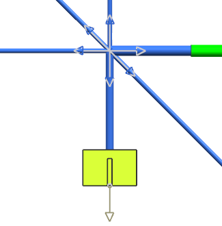
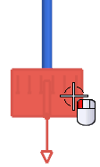
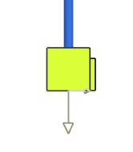
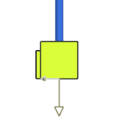

Rotate the 24–pin connector
-
Zoom in on the 24–pin connector.

-
On the Formboard Tools toolbar, click Rotate Component
 .
.
-
Select the connector.

-
In the Axis group, make sure the Axis Type is set to Path Locations.
-
In the Angle box, type 90.
-
Click Apply.

The connector is rotated so that the keying tab is to the right.
-
Select the connector again.
-
In the Angle box, type 180, and then 点击确定。

The connector is revolved 180 degrees about its path so that the keyway lies in the opposite direction.
-
Save but do not close your part. You will use it in the next activity.